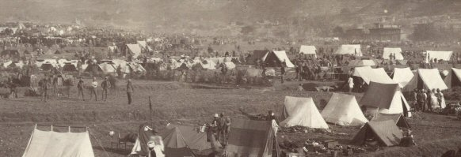
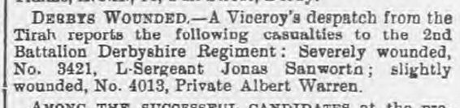

Albert began his military career at the age of 17 as Private 4627, 3rd Leicestershire Regiment. He was attested for 6 years at Leicester on 8 November 1892. He remained with the Leicesters for just 49 days before his transfer to the 2nd Battalion Derbyshire Regiment as Private 4013 on 31 January 1893. Sadly the record of service in his attestation stops at this point but we have been able to trace his record of service from other sources.
Following a period of basic training, Albert would have been posted as a draft to his battalion who were serving in North India at the time. In 1894 they had just moved from Umballa (now Ambala) to Solon (now Solan) in Himachal Pradesh.

This was a regular posting undertaken by many British Army regiments but it was against a background of continuing unrest on India's North West Frontier with Afghanistan. In 1897 the battalion moved again, this time to Sitapore (now Sitapur) in Uttar Pradesh. At the same time there had been a series of tribal uprisings on the North West Frontier, starting in the Swat Valley and led by a holy man referred to as the Mad Mullah by the British. The British responded to the spreading revolts by sending Field Forces to Malakand, the Swat Valley, the Tochi Valley and another to fight against the Mohmands. Despite this activity, the British lost control of an alarming amount of territory. Worse was to follow with the loss of the Khyber Pass itself on 25 August 1897.
The Tirah Expedition was organised as a response to this threat to British Imperial prestige and the approaches to British India. Their nominal target was the Afridi and Orakzai tribesmen who had moved south of the Khyber Pass. However, the real objective was to reassert British control definitively in the area and to deter tribesmen from probing yet further into northern India. The government raised an impressively sized Field Force consisting of up to 40,000 soldiers and over 60,000 transport animals, commanded by Lt-General Sir William Lockhart. Albert and the 2nd Derbyshire Regiment formed part of this expedition.

The expedition was to invade Tirah from Kohat via the Sampagha and Arhanga passes whilst being supported by flanking columns from Peshawar and the Kurram. The force was very large, containing 12 British battalions and 24 Indian and Gurkha battalions. The 2nd Battalion Derbyshires were part of the 1st Division and were commanded by Colonel Dowse. The Dorset and the Northampton battalions suffered from cholera during the journey to the north-west and were confined to camp for 10 days. The Derbyshires fared better, avoiding the outbreak, but they did suffer from sore feet.
Sappers tried to improve the road but were harassed by Afridis firing from the Dargai Heights. They could not be dislodged with artillery so the 2nd Division was sent up to clear them on the 18th. This first assault was achieved quickly and the Heights were captured but there was not enough water and the position had to be abandoned. The tribesmen regained possession soon afterwards. It was decided to scale the Heights again on the 20th; this time the Derbys were brought in from the 1st Division to help. The Gurkhas led the attack with the Dorsets in support and the Derbys in reserve. The Gurkhas bravely rushed at the defences but, having suffered 71 casualties, were pinned down. Next, the Dorsets tried to cover the open ground but were cut down. Three companies of the Derbys then made the attempt through a narrow space which was easy for the Afridi marksmen to aim at. During this attack Lt Pennell won his VC.

Major-General Yeatman Biggs ordered a further attempt led by the Gordon Highlanders and the 3rd Sikhs, with the rest of the Derbyshire battalion in support and the Dorsets in reserve, preceded by an artillery barrage. The determined Gordons swept forward taking many casualties but causing great concern amongst the tribesmen. The Derbys and Dorsets gave covering fire but were so inspired that they joined the attack. The final yards were almost easy as the tribesmen had started to run away. Sergeant Cursley of the Derbys used his signal flag to inform the Divisional commanders that Dargai was cleared. The regiment had lost one officer and three men killed, eight wounded.
With the Dargai Heights safely under British control, the Field Force could advance with relatively limited resistance. By 29 October they had taken the ridge overlooking the Sampagha Pass. Two days later the Arhanga Pass was secured, allowing the British to begin taking punitive actions against the tribes beyond — villages were burnt, crops destroyed and weapons confiscated.

Throughout November the Force was subjected to sustained guerilla warfare and losses were high. As the winter weather advanced the Force began to leave the area. The 3rd and 4th Brigades experienced deadly sniping and probing attacks as they withdrew back to the Bara Valley. On 11 December, mist and fog descended on the troops and the Afridi tribesmen took advantage to launch a sustained series of attacks. It was during this period that Albert sustained a minor wound at China in the Bazar Valley on 26 December 1897.

Fighting continued as the weather improved. The Khyber Pass itself was recaptured. Negotiations brought a pause to the fighting and by June 1898 the Afridis agreed to hand over 800 breech-loading rifles and pay an indemnity of 50,000 rupees. Albert's service in India entitled him to the General Service Medal with clasps for the Punjab Frontier 1897–8 and Tirah 1897–8.
After a brief spell in Aden the battalion moved to Malta, arriving on 25 October 1899. By 1 July 1900 the total strength was 884 men, stationed at Mtarfa Barracks. The battalion moved back to Britain from Malta in 1902, but just prior to this a draft of soldiers from the 2nd Battalion were transferred to the 1st Battalion arriving at Rustenburg, South Africa on 8 April 1902. Amongst this draft was Private 4013 Albert Warren. Albert played his part in the final stages of the Boer War and qualified for the Queen's South Africa Medal with clasps for 1902, Transvaal and Cape Colony. Family folklore also has it that around this time Albert was the regimental mascot handler.
As the Boer War drew to a close the regiment — now known officially as the 1st Battalion Sherwood Forester Regiment — embarked for Hong Kong. The Boxer Rebellion had swept across China as a revolt against the foreign powers occupying the country. The Sherwood Foresters were sent to carry out mopping-up exercises and secure strategic objectives around Tien-Tsin and Peking.

In November 1904 the battalion left Taku Bar for Singapore, arriving in December 1904. It is possible that Albert never landed in Singapore as his period of enlistment expired on 30 January 1905 and so it is likely that he sailed directly to Britain. There was then a break of nine years before the outbreak of the First World War led Albert to re-enlist.